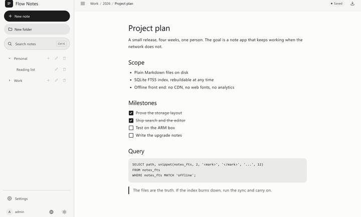

開源 / 索引
自己網路上的
軟體。
下面每個專案都是開源，跑在自己控制的機器上。每一列寫了它做什麼、需要準備什麼， 點進去看專案自己的頁面——從符合你需求的那一個開始。
Hy2droid
一個 Android App：把這台手機連到你自己的（或別人給你分享連結的）Hysteria 2 伺服器。貼上連結或掃 QR 碼，手機的上網流量就從那台伺服器出去。需要 Android 11 以上；不用 root，也不用 Google 帳號。
AndroidKotlin
AGPL-3.0
 02
02
AmneziaWG Web UI
用網頁管理自家 AmneziaWG VPN 伺服器，整包是一個約 35 MB 的 Docker image：開伺服器與用戶端、匯出 .conf／QR／vpn:// 連結、看即時流量。需要一台裝好 Docker、Compose 2.24 以上的 Linux 主機和對外 IPv4。
自架Docker · Go
AGPL-3.0
 03
03
iMail
自有網域的郵件伺服器：SMTP、IMAPS、POP3S、瀏覽器信箱、管理台與逐網域憑證。需要 Docker、一個你能控制 DNS 的網域，以及供應商沒有封鎖的 25 埠。
郵件Go · Docker
AGPL-3.0
 04
04
Flow Notes
自己跑的筆記伺服器：每篇筆記都是純 Markdown 檔，磁碟上的資料夾就是側邊欄，SQLite FTS5 只是可重建的索引。編輯器完全離線，沒有 CDN、沒有線上字體。需要 Docker，或手動安裝用 Python 3.11。
筆記Python · Docker
MIT

常見問題
自架的服務有 HTTPS 嗎？
沒有。Flow Notes、iMail 與 AmneziaWG 面板都以純 HTTP 監聽——Flow Notes 是 8000 埠，iMail
要等它自己的 ACME 設定完成才有 443，AmneziaWG 用你指定的埠。它們的 session cookie 是
HttpOnly 加 SameSite=Lax，但沒有 Secure，這正是內網
位址像 http://192.168.1.10:8000 能登入的原因。請讓這些埠留在內網，對外之前
在後面終結 TLS。
要怎麼在前面放反向代理？
Caddy 兩行就好：notes.example.com { reverse_proxy 127.0.0.1:8000 }。nginx 則是
proxy_pass http://127.0.0.1:8000; 加
proxy_set_header Host $host;，並把 client_max_body_size 提到 21m
以上，否則 20 MB 的圖片上傳會被擋。不需要 WebSocket upgrade，也不需要改寫規則；把容器綁在
127.0.0.1:8000 就能讓純 HTTP 的埠不出現在網路上。